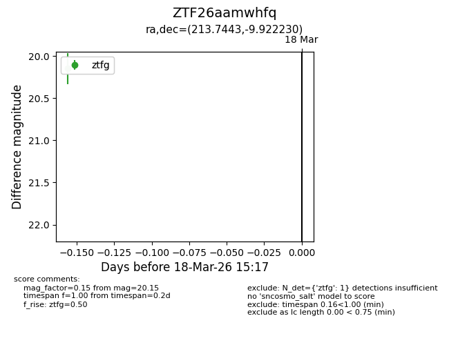
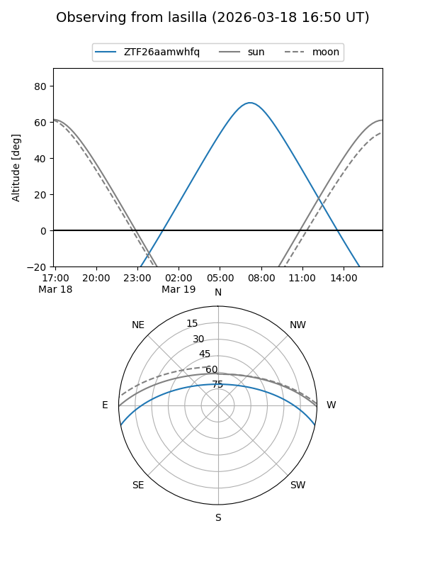
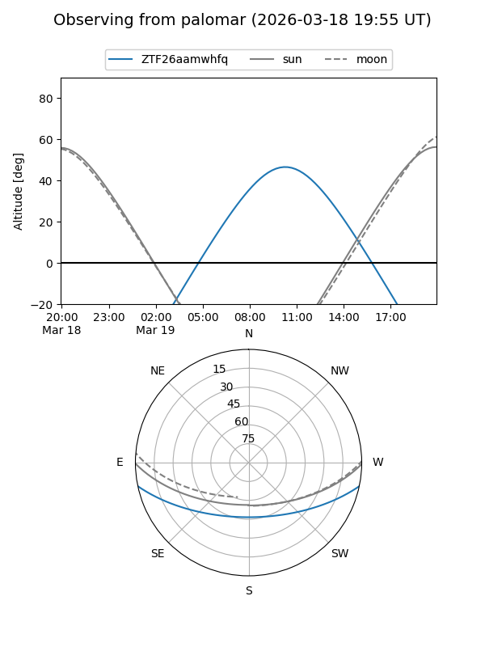

ZTF26aamwhfq
Target ZTF26aamwhfq at 2026-03-18 15:19
Aliases and brokers:
FINK: link
Lasair: link
ALeRCE: link
alt names
ZTF26aamwhfq (ztf,fink_ztf)
Coordinates:
equatorial (ra, dec) = 213.7443,-9.92223
equatorial (HMS+DMS) = 14:14:58.62,-09:55:20.03
galactic (l, b) = (334.4332,+47.77459)
Flags:
Photometry:
last ztfg=20.15
1 ztfg detections
Lightcurve

Visibility


Additional plots